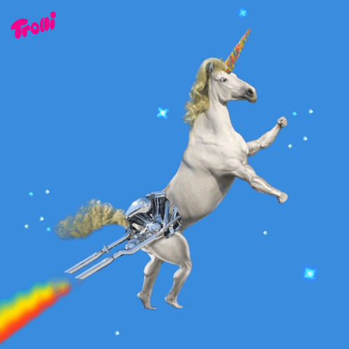

In Siberia there was a study on a skull that was found, no one was sure what it was. Until they realised it was a fossilised unicorn, it is believed it was a horse like animal with a horn. This could suggest they still hide among us, evolved into better forms.
